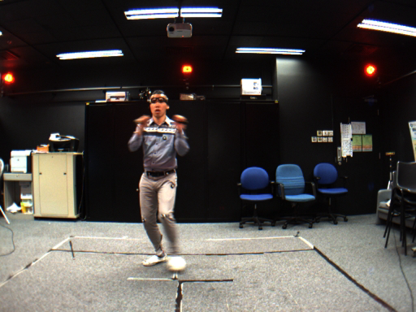

ML
CV
·
0 вопросов
CV
Практические задания по компьютерному зрению.
-
Semantic Segmentation
Решить задачу семантической сегментации на данных Human Segmentation MADS Dataset. Разобраться с предобработкой, архитектурой, метриками, активациями, лоссами, оптимизаторами и логгированием.
Данные для задачи можно скачать здесь: Human Segmentation MADS Dataset.

МетрикиОптимизаторыAdam AdamWГиперпараметрыLR Batch size Epochs Dropout $L_2$ (weight_decay)- Загрузка и предобработка: загрузить датасет, изучить обработку изображений и аугментации.
- EDA по данным: распределение классов, наличие дисбаланса; показать несколько примеров каждого класса.
- Transforms: нормализовать изображения. Поэкспериментировать с аугментациями:
RandomRotation,RandomAffine,RandomCrop. - Метрики: см. чипы выше.
- Лосс: поэкспериментировать с разными лоссами (см. чипы выше), попробовать добавить взвешивание классов.
- Модель:
- Взять класс кастомной CNN модели с помощью
PyTorch, обучить с нуля. - Взять предобученную модель из timm (UNet-подобную) или др. и дообучить на датасете MADS Dataset.
- Взять класс кастомной CNN модели с помощью
- Оптимизация: выбрать оптимизатор и зафиксировать гиперпараметры — см. чипы выше.
- Обучение: train, validation, test сплиты; на каждой эпохе — обучение на train и оценка на validation; логировать loss (train/validation), обязательно градиенты; визуализировать кривые обучения.
- Тестирование: после обучения — оценка на test-выборке.
- Логгирование экспериментов: Weights & Biases или TensorBoard.
- Проанализировать: как повлияли разные настройки на обучение и итоговое качество.
- Что логгировать: Loss, Accuracy, Learning rate (если есть scheduler), метрики на val/test, при желании — нормы градиентов.